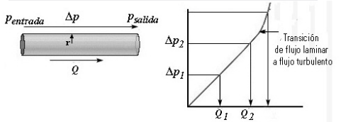

<html>
<head>
<title>MECANICA DE FLUIDOS, F024, fisica online, ejercicios resueltos</title>
<meta http-equiv="Content-Type" content="text/html; charset=UTF-8" />
<meta name="keywords" content="problemas resueltos, ejercicios resueltos, cbc, fisica, biofisica, fluidos, liquidos, gases, bernoulli, poiseuille, viscosidad, ideales, viscosos, humedad, difusion, osmosis, nomesalen, no me salen, ricardo cabrera" />
<meta name="description" content="Ejercicios y problemas resueltos, y apuntes teóricos de Fluidos, mecanismos de transporte de fluidos" />
<link rel="stylesheet" href="win_ie.css">
<style type="text/css">
<!--
.style1 {
	color: #3F6386;
	font-weight: bold;
}
.Estilo3 {color: #3F6386}
.Estilo16 {font-size: 16px}
.Estilo19 {font-size: 10px; font-weight: bold; font-style: italic; }
-->
</style>
</head>

<body bgcolor="#FFFFFF" text="#000000" alink="#000000" leftmargin="0" topmargin="0" marginwidth="0" marginheight="0">
<table align=center width="600" border="0" cellspacing="0" cellpadding="0"> 
  <tr bgcolor="#000000" align="right"> 
<td></td></tr> <tr bgcolor="#BB0000" valign="middle" align="left"> 
<td class="bodytext" height="20"><TABLE WIDTH="100%" BORDER="0" CELLSPACING="0" CELLPADDING="0">
  <TR ALIGN="center" CLASS="menuitem">
    <TD WIDTH="43" height="19" CLASS="menuitem"><A HREF="../../index.html" CLASS="menuitem">&nbsp;<B>home</B>&nbsp;</A></TD>
    <TD WIDTH="5" CLASS="menuitem"><FONT COLOR="#000000">|</FONT></TD>
    <TD width="119" CLASS="menuitem"><strong><a href="index_hdinam.html" class="menuitem">más de hidrodinámica </a> </strong></TD>
    <TD width="9" CLASS="menuitem"><FONT COLOR="#000000">|</FONT></TD>
    <TD width="127" CLASS="menuitem"><strong><a href="../../intro_NMS.html" class="menuitem">otros temas de F&iacute;sica</a></strong></TD>
    <TD width="10" CLASS="menuitem"><FONT COLOR="#000000">|</FONT></TD>
    <TD width="160" CLASS="menuitem"><strong><a href="../../lista_ciruela.html" class="menuitem">lecciones del maestro Ciruela </a></strong></TD>
    <TD width="8" CLASS="menuitem"><FONT COLOR="#000000">|</FONT></TD>
    <TD width="67" CLASS="menuitem"><strong><a href="../../lista_tonterias.html" class="menuitem">tonter&iacute;as</a></strong></TD>
    <TD WIDTH="7" CLASS="menuitem"><a href="../energia/index_energia.html" class="menuitem"></a><FONT COLOR="#000000">|</FONT></TD>
    <TD WIDTH="48" CLASS="menuitem">&nbsp;<B><FONT FACE="Arial, Helvetica, sans-serif"><A HREF="mailto: ricuti@gmail.com" CLASS="menuitem">@</A></FONT><A HREF="../../index.html" CLASS="menuitem"></A></B>&nbsp;</TD>
  </TR>
</TABLE></td></tr> <tr> <td class="bodytext" height="8"><p></td>
</tr> 
<tr align="center"> <td height="1006"> <table width="600" border="0" cellspacing="0" cellpadding="0"> 
<tr class="bodytext"> <td valign="top" width="594" height="967"> 
<table width="599" border="0" cellspacing="0" cellpadding="0"> <tr> 
  <td height="74" colspan="2" bgcolor="#D7FFFF" class="bodytext"><span class="bodytext"><strong><em><strong><em><strong><strong>&#160; &#160;</strong></strong></em></strong></em>NO ME SALEN<br />
</strong></span><span class="Estilo3"><em class="bodytext "><strong><em><strong><em><strong><strong>&#160; &#160;</strong></strong></em></strong></em>(<strong>PROBLEMAS RESUELTOS   DE BIOF&Iacute;SICA DEL CBC</strong>)</strong></em></span><br />
      <span class="titulograndegris Estilo16"><strong><em><strong><em><strong><strong>&#160; &#160;</strong></strong></em></strong></em>FLUIDOS<br />
      </strong></span><br /> </td>
  <td class="bodytext" rowspan="3" height="74" width="7">&nbsp;</td>
  <td class="bodytext" height="74" rowspan="3" valign="top" width="86"> 
<p></p></td></tr>
  <tr>
    <td height="14" colspan="2" bgcolor="#FFFFFF" class="bodytext">&nbsp;</td>
  </tr> 
<tr> <td width="149" height="45" valign="top" class="bodytext"><p></P>
    </td>
  <td width="357" class="bodytext"><p><strong>49 - En el gráfico se representa la diferencia de  presión entre los extremos del tubo en función  del caudal que circula.</strong></p>    </td>
</tr>
<tr>
  <td height="104" colspan="2" align="right" valign="top" class="bodytext"><p></td>
  <td class="bodytext" height="104">&nbsp;</td>
  <td class="bodytext" height="104" valign="top">&nbsp;</td>
</tr>
<tr>
  <td height="455" colspan="2" valign="top" class="bodytext"><p><strong> a) ¿Qué representa la pendiente?  </strong>La pendiente de una curva es -matemáticamente- el cociente entre el intervalo de ordenadas sobre el intervalo de abscisas. Geométricamente es la inclinación de la curva: más inclinada, mayor pendiente; menos inclinada, menor pendiente.</p>
    <p>En nuestro caso, es fácil ver que ese cociente no es otra cosa que la resistencia hidrodinámica del tubo (ley de Ohm):      </p>
    <blockquote>
      <p><em><strong>R<sub></sub> = &Delta;<em><strong><em><strong><strong><em>p</em></strong></strong></em></strong></em> / Q<sub></sub></strong></em></p>
      </blockquote>
    <p>Y eso genera una inquietud. ¿Cómo es que el mismo tubo, con la misma geometría, y conduciendo el mismo fluido pueda tenera valores de resistencia diferentes? Se debe al cambio en el régimen de flujo. Podemos distinguir <a href="FT_laminar.html" target="_blank">dos tipos de flujo: el laminar y el turbulento</a>. Cuando el fluido avanza en régimen turbulento le cuesta más avanzar, o sea, encuentra una resistencia mayor.</p>
    <p><strong>b) Observe el cambio cualitativo de comportamiento al pasar de régimen laminar a turbulento;  ¿en cuál se disipa energía más rápidamente?</strong> Acordate que el trabajo, <em><strong>L</strong></em>, necesario para avanzar por un tramo de cañería es:</p>
    <blockquote>
      <p><em><strong>L =    &Delta;P . V</strong></em></p>
    </blockquote>
    <p>Donde <em><strong>V</strong></em> es volumen. Luego un mismo volumen deberá disipar más energía porque estará perdiendo más presión.</p>
    <p><strong>c) En la arterioesclerosis se pierde la elasticidad de las arterias lo que provoca la aparición de  turbulencias, ¿por qué se asocia esto a una  hipertensión arterial?</strong> Porque al aumentar la resistencia hidrodinámica, para mantener el mismo caudal, el organismo debe aumentar la presión.</p>
    <blockquote>
      <p><br>
      </p>
    </blockquote></td>
  <td class="bodytext" height="455">&nbsp;</td>
  <td class="bodytext" height="455" valign="top">&nbsp;</td>
</tr>
<tr>
  <td colspan="2" class="bodytext">&nbsp;</td>
  <td width="7" class="bodytext">&nbsp;</td>
  <td width="86" valign="top" class="bodytext">&nbsp;</td>
</tr>  
<tr>
  <td height="32" colspan="2" align="left" class="bodytext"><p class="epigrafe">&nbsp;</p>    </td>
  <td class="bodytext">&nbsp;</td>
  <td width="86" rowspan="3" valign="bottom" class="bodytext"></td>
</tr>

<tr>
  <td height="18" colspan="2" bgcolor="#FFFFFF" class="bodytext">&nbsp;</td>
  <td class="bodytext">&nbsp;</td>
  </tr>

<tr> <td colspan="2" align="center" valign="middle" bgcolor="#CCCCCC" class="bodytext"><table width="85%" border="0" cellspacing="0" cellpadding="0">
  <tr>
    <td class="epigrafe">Algunos derechos reservados. 
  Se permite su reproducci&oacute;n citando la fuente. &Uacute;ltima actualizaci&oacute;n jul-22. Buenos Aires, Argentina. </td>
  </tr>
</table>  </td>
  <td class="bodytext" width="7">&nbsp;</td>
  </tr> 
<tr> <td height="18" colspan="2" class="bodytext">&nbsp;</td><td class="bodytext" width="7">&nbsp;</td>
<td class="bodytext" width="86">&nbsp;</td>
</tr> 
</table></td></tr> </table>
<p></td></tr> 
<tr> <td class="bodytext"><p></td></tr> 
</table>
</body>
</html>
